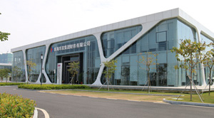
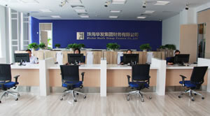

公司介绍
经中国银行业监督管理委员会批准，华发财务公司于2013年9月9日在珠海横琴新区注册成立，注册资本金人民币10亿元，并于2013年9月22日正式开业。
公司建立了股东会、董事会、监事会三权分立的现代企业法人治理结构。股东会为本公司的权力机构，董事会是本公司的执行机构，监事会是本公司的监督机构。董事会下设风险管理委员和审计委员会。公司实行董事会领导下的总经理负责制，设立了资金业务部、结算业务部、信贷业务部、审计管理部、风险管理部、财务管理部、综合管理部和创新发展部等8个职能部门负责本公司的日常经营和管理。
公司通过面向全球招聘和在集团公司内部选调方式精选从业人员，目前已办理入职的从业人员总数为32人，其中，从事金融或财务工作5年以上的人员有23人，占总人数的72%，且大部分具有金融业从业经验，远超银监会对新设财务公司从业人员从业经历的要求。
公司主要对成员单位办理存款、贷款、结算等相关业务，为成员单位提供财务和融资顾问、信用鉴证等咨询、代理业务，为成员单位提供担保等，以加强成员企业资金集中管理和提高资金使用效率为目的，为成员企业提供优质金融服务。
公司制订了全面的经营管理制度，包括公司章程、法人治理等基本管理制度，资金、结算、信贷、风险等业务管理制度和信息系统、行政管理、财务管理制度共77项，并根据业务实际运营情况进行了进一步的修订和完善。
司核心业务系统和网银系统采用了财务公司领域广泛应用的成熟系统--软通动力信息技术（集团）有限公司开发的财务公司业务运营平台软件V6.0版本，采用了华发集团专用网络、CFCA数字证书、权限管理、多岗监控等多种措施保障系统安全；目前已实现了与工商银行、农业银行、建设银行、广发银行四家银行的银企直联，核心业务系统与其他系统信息可以集中与共享。
华发财务公司是广东省第七家、珠海市第二家企业集团财务公司。作为落户横琴新区的第一家非银行法人金融机构，公司肩负着率先试点横琴金融创新政策的重任。在集团和各级监管部门的监管和指导下，公司规范治理、审慎经营、稳健发展，不断提高资本运作、财务管理和金融创新水平，进一步完善和丰富珠海市金融服务体系，争取早日成为全国一流的财务公司。
- 
- 
联系方式
地址：珠海横琴金融产业服务基地18号楼A区
邮编：519031
电话：（0756）8928977
传真：（0756）8928977